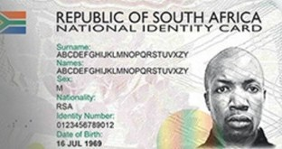
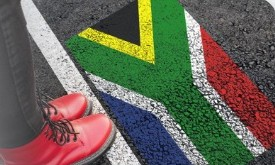

South African ID Holders
If you have a South African ID Card with a 13 digit SA ID number

The Social Relief of Distress Grant (SRD Grant) is administered in terms of section 32 of the Social Assistance Act, 2004 (Act No. 13 of 2004) and is implemented with the concurrence of the Minister of Finance.
The SRD Grant is meant for South African Citizens, Refugees, Asylum Seekers and Special Permit Holders who are between the ages of 18 and 60 years, who have insufficient means, who do not receive social grants on behalf of herself/himself, who are not contributing to or eligible for UIF payment, and who have no financial support from any other source.

If you have a South African ID Card with a 13 digit SA ID number

If you are an Asylum Seeker with a valid File Number or Special Permit Holder from Zimbabwe, Angola or Lesotho
Please note that all information will be provided electronically and there is no need to upload any documentation. Please ensure that you provide SASSA with a Mobile Number (cell phone number) where we can reach you to provide you with feedback on the status of your application. If this number is not the same as the number used to lodge the application, please contact the SASSA call centre on 0800 601 011 to update the mobile number.
Should your application be declined, you will have the right to appeal the SASSA decision by lodging an appeal with the Department of Social Development for each month your application was declined. To lodge the appeal click here.